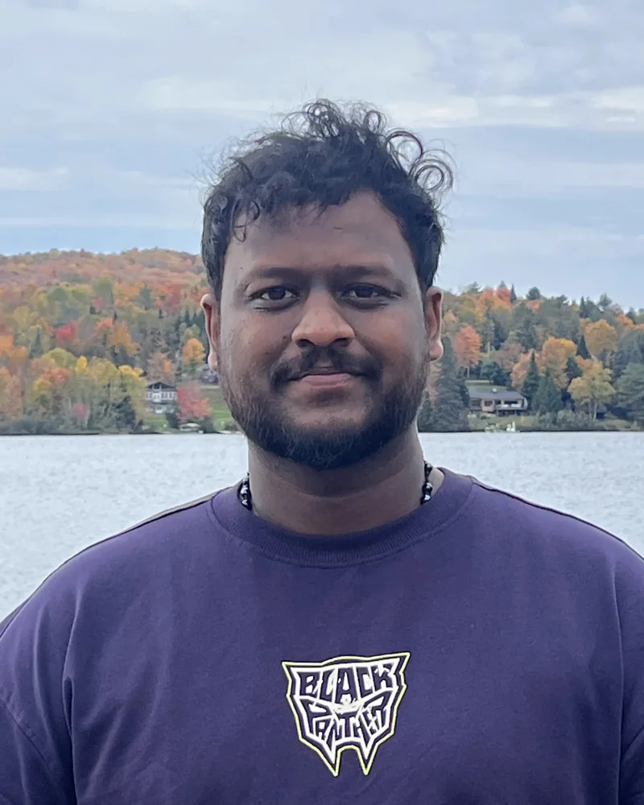
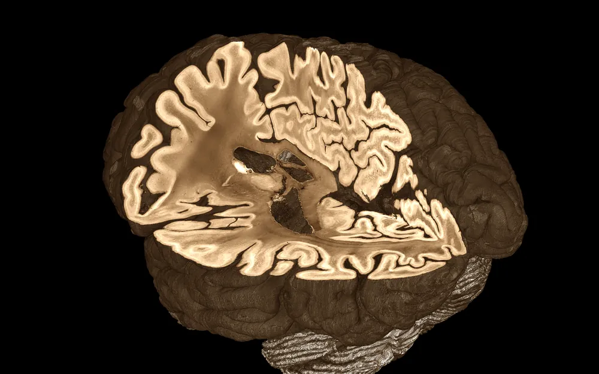
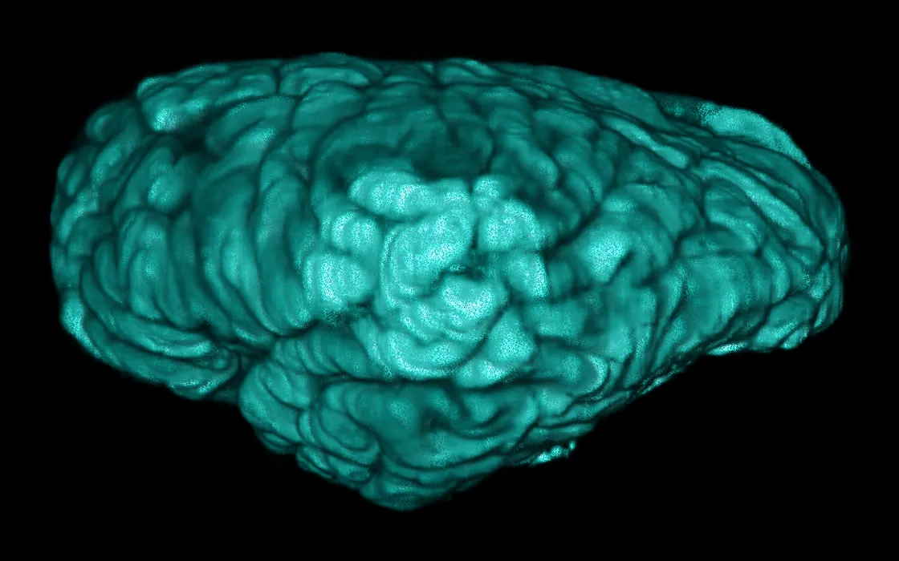
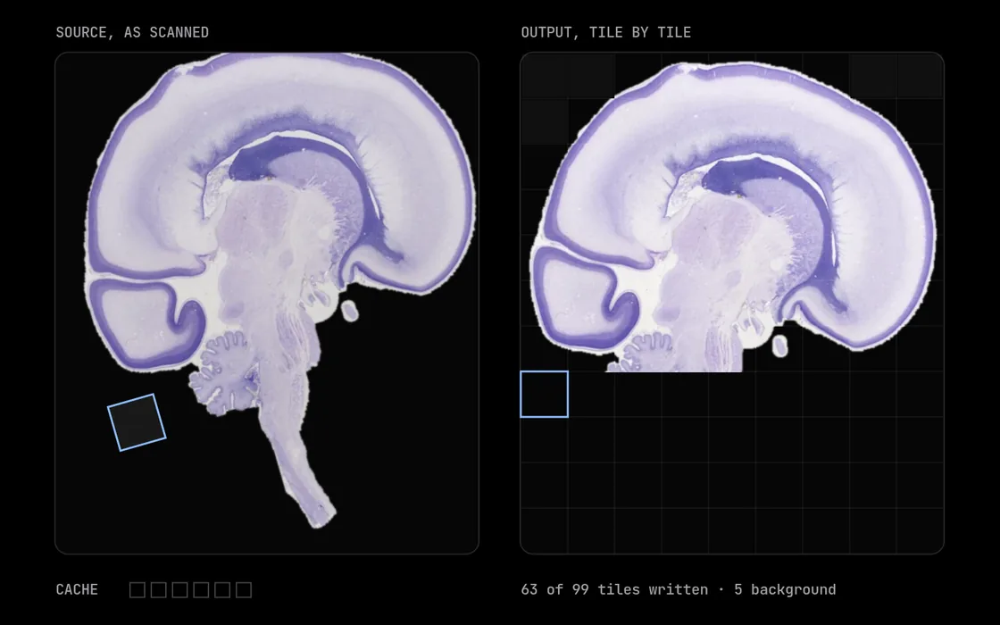
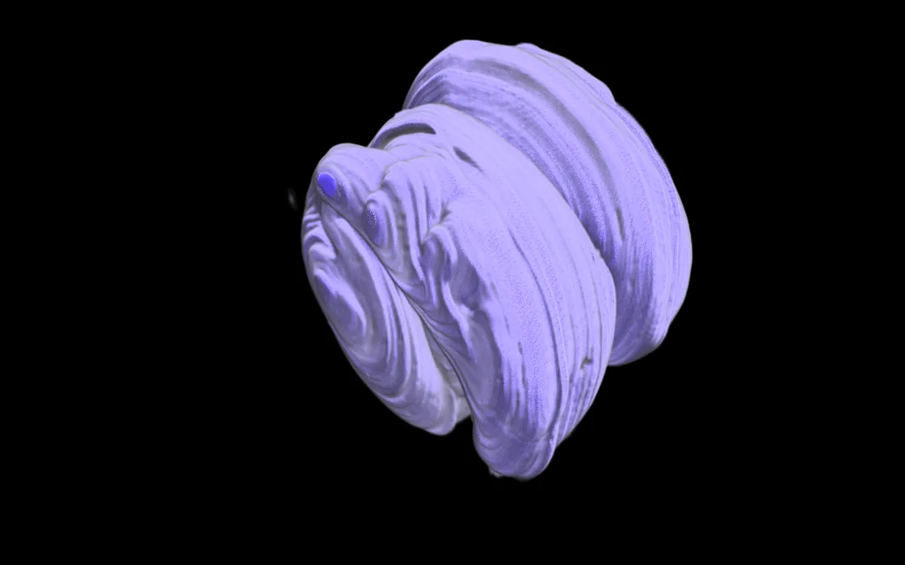
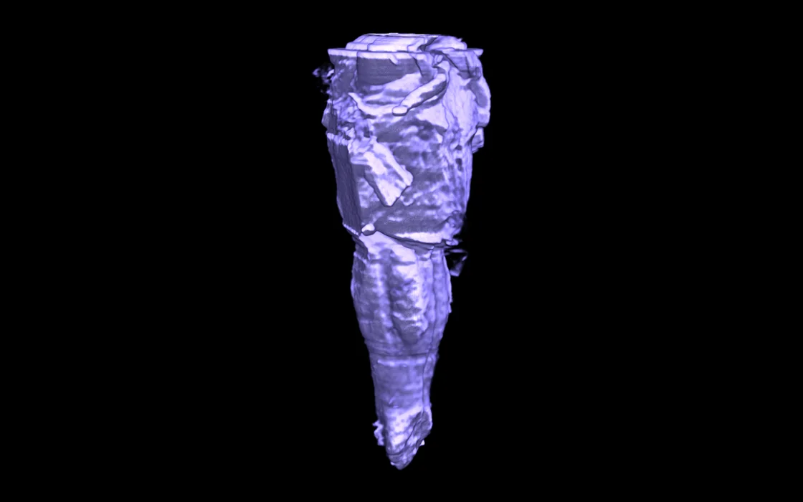
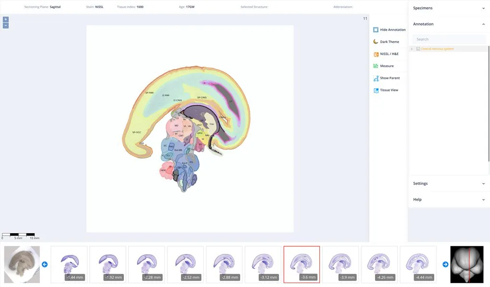
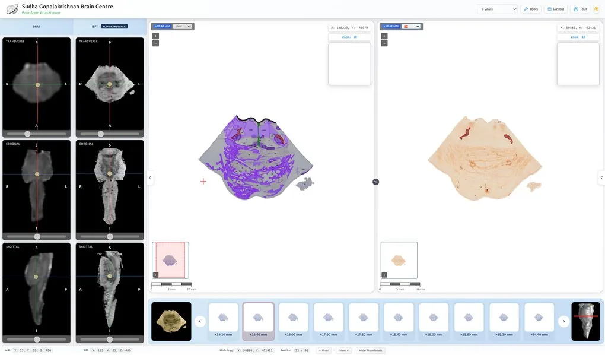
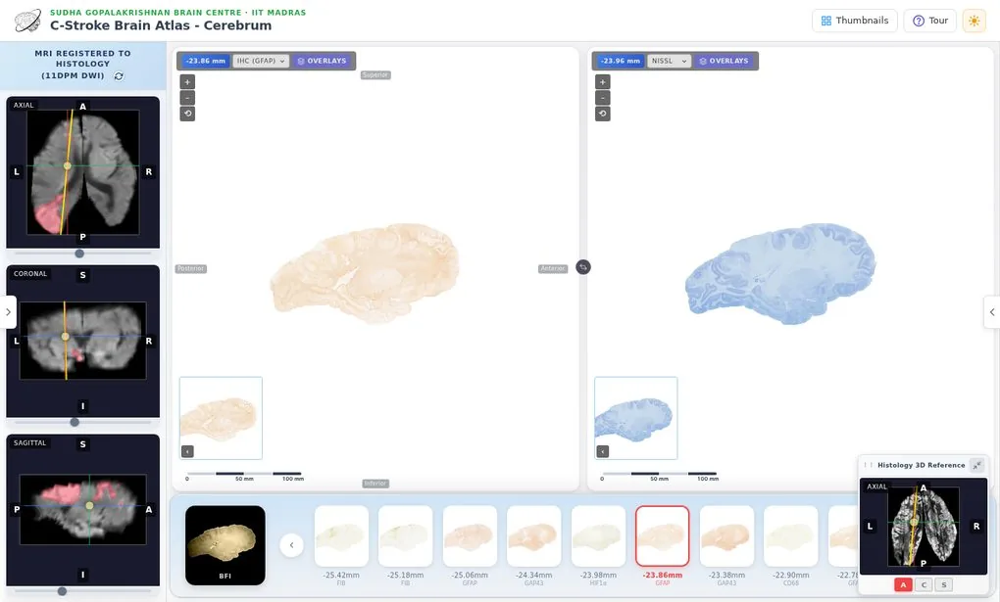
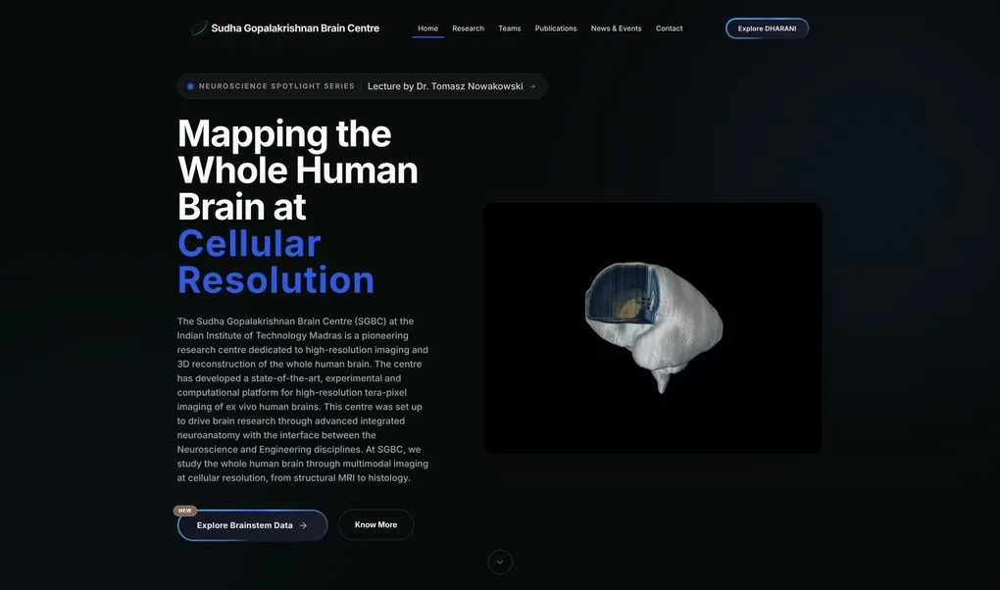

Project Associate · Sudha Gopalakrishnan Brain Centre, IIT Madras
Chrisline Sam C
I build software for seeing the human brain, cell by cell.
Gigapixel viewers, public brain atlases, GPU volume rendering and out-of-core image processing for whole-brain histology.
- Winner, BigBrain Hackathon 2026
- Co-author, DHARANI, ANCHOR and C-Stroke
- Poster, 10th BigBrain Workshop
About

I work where neuroscience meets very large images.
Since December 2021 I have been a Project Associate at the Sudha Gopalakrishnan Brain Centre, IIT Madras (IITM), which images whole human brains at cellular resolution. I started by building the centre's web tools: a viewer for gigapixel brain sections, annotation editors, and section registration.
Lately my work has moved to where the data is largest: rendering whole-brain histology on the GPU, and registering sections at their native 0.5 µm per pixel without ever loading them whole. I am a co-author of three of the centre's atlases: DHARANI, ANCHOR and, most recently, C-Stroke, the first cellular atlas of a human stroke. In October 2026 my project Open the Mind won the BigBrain Hackathon in Montréal.
Why you might know me

Winner · BigBrain Hackathon 2026
Open the Mind
Whole-brain histology, streamed from a GPU to any browser. Voted the winning project by the workshop participants at The Neuro, Montréal, 18–19 October 2026.
Poster · 10th BigBrain Workshop
Streaming out-of-core rigid registration of whole-slide histology at native resolution
Co-author · J Comp Neurol 2025
DHARANI
A 3D atlas of the developing human brain, 14 to 24 weeks.
Co-author · bioRxiv 2026
ANCHOR
The human brainstem across the lifespan, mapped with Nissl and seven IHC markers.
Latest work · co-author · 2026
C-Stroke
A whole human brain after a stroke, reconstructed cell by cell and registered to clinical MRI.
Selected work

Winner · BigBrain Hackathon 2026
Open the Mind
Streaming, out-of-core volume rendering of whole-brain histology: rendered on the server GPU, cut live from any browser, in fixed memory.
Read the story
Latest work · co-author · preprint, 2026
C-Stroke
The first whole-brain, cell-resolution reconstruction of a human ischemic stroke, registered to clinical MRI. The tissue showed 39% more injury than the scan.
Read the story
Poster · 10th BigBrain Workshop
Streaming registration
Rigid registration of whole-slide histology at its native 0.5 µm per pixel: 600 GB of output from about 12 GB of memory.
Read the story
Co-author · The Journal of Comparative Neurology, 2025
DHARANI
A 3D atlas of the developing human brain from 14 to 24 weeks. Scroll through five fetal brains, rendered live in your browser.
Read the story
Co-author · bioRxiv preprint, 2026
ANCHOR
The human brainstem at three ages, in more than 800 serial sections stained for Nissl and seven IHC markers.
Read the storySudha Gopalakrishnan Brain Centre, IIT Madras · since December 2021
The software between the microscope and the screen.
The centre images whole human brains at cellular resolution. I build the tools that turn those scans into something people can look at, mark up and measure.
-
High-resolution viewer
Shows sections 20 µm thick, scanned at 0.5 µm per pixel, in the browser without losing resolution or quality.
-
Annotation editor
Draws geometric annotations of brain regions on those images, then saves, displays and shares them between users.
-
Pixel annotation tool
Paints cells at pixel resolution, so machine-learning cell detectors have better ground truth to learn from.
-
Section registration
Aligns adjacent sections three ways: manual, image-to-image and ICP registration.
Public atlases from the centre
-

DHARANI Five fetal brains, 14–24 weeks. -

ANCHOR The brainstem at three ages. -

C-Stroke Ischemic stroke at cell resolution, registered to MRI. -

SGBC The centre at IIT Madras.
Also on GitHub
Papers and posters
-
Preprint · 2026
A 3D whole-brain cellular atlas of MRI-mapped human ischemic stroke: Injury beyond the lesion defined by neuroimaging
-
Poster · 10th BigBrain Workshop · 2026
Streaming out-of-core rigid registration of whole-slide histology at native resolution
-
bioRxiv preprint · 2026
ANCHOR: Atlas of Neurochemical Characterization of the Human Brainstem with 3D Reconstruction
-
The Journal of Comparative Neurology · 533(2) · 2025
DHARANI: A 3D Developing Human-Brain Atlas Resource to Advance Neuroscience Internationally Integrated Multimodal Imaging and High-Resolution Histology of the Second Trimester
Timeline
Presented a poster on streaming registration at the 10th BigBrain Workshop, The Neuro, Montréal.
Won the BigBrain Hackathon 2026 with Open the Mind. The prize: a Dell Pro Max with NVIDIA GB10.
C-Stroke, the cellular atlas of human ischemic stroke, released at IIT Madras by Prime Minister Narendra Modi. Co-author.
ANCHOR, the human brainstem atlas, posted to bioRxiv. Co-author.
DHARANI published in The Journal of Comparative Neurology. Co-author.
Joined the Sudha Gopalakrishnan Brain Centre, IIT Madras, as a Project Associate.
B.E. in Electronics and Communication Engineering, RMD Engineering College.
Toolbox
- GPU and performance
- Triton, PyTorch, CUDA (nvJPEG), out-of-core and multi-resolution data, multi-core tiling
- Imaging data
- OME-Zarr, OME-TIFF, TIFF, NIfTI, GeoJSON, IIPImage
- Web
- Angular, JavaScript, WebGL, OpenLayers, Konva, WebSocket
- Back end and systems
- Python, Django, Flask, Docker, Linux, deploying machine-learning models